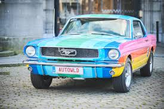
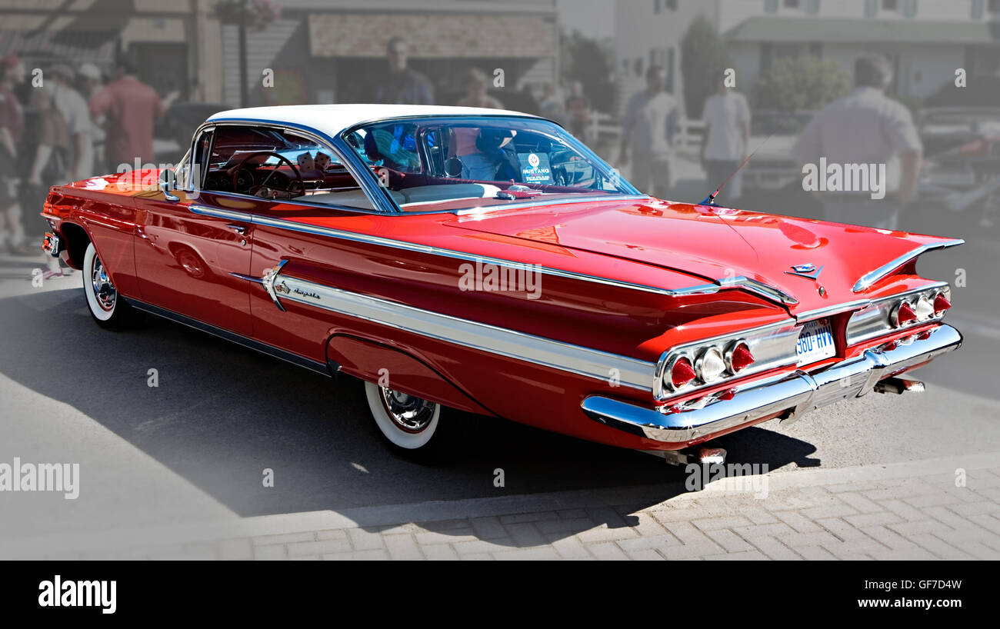

1964 Ford Mustang
Az egyik legismertebb klasszikus amerikai izomautó.

1967 Chevrolet Impala
Elegáns és erőteljes amerikai szedán, amely híres lett a popkultúrában.

1969 Dodge Charger
Ez az autó a sebesség és a stílus szimbóluma a 60-as évekből.